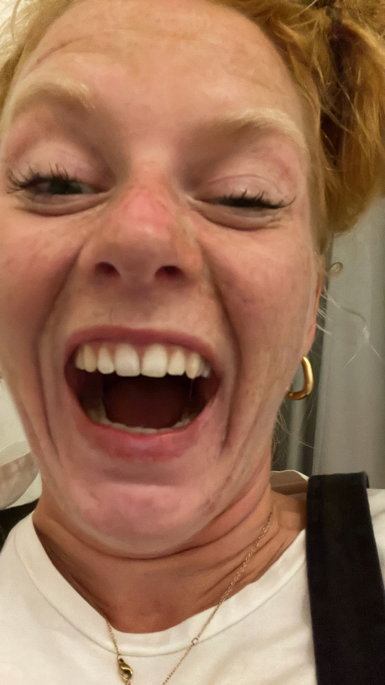
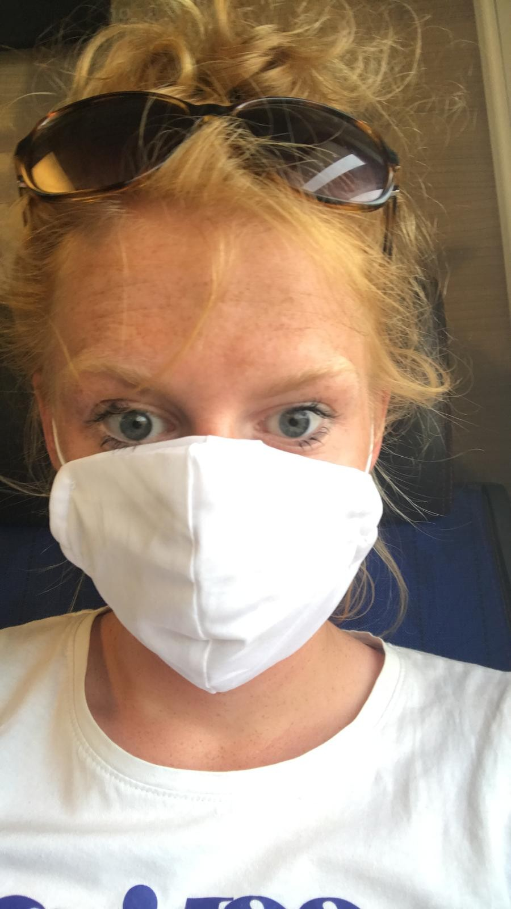
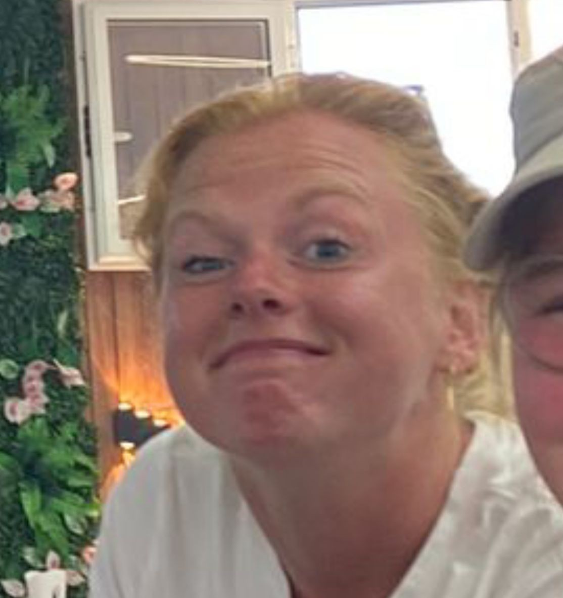

Ha Syb en Fleur, wat zijn jullie leuk samen. Genoeg geslijmd, want de waarheid is natuurlijk dat een relatie best wel moeilijk is, zeker als je ff naar je wederhelft kijkt. Tjongejonge. Daarom bied ik jullie deze prachtige survivaltool aan!
Ten eerste kan deze tool een eindeloze discussie beslechten door het gebruik van het lot. Geef een slinger aan het rad en klaar is kees 😊. Daarnaast heeft ene heer J. Verzijl allemaal handige #rela tips voor jullie gereed staan. En mochten jullie je nog een keer vervelen, geen nood, want dan kan je terecht op de #verbindingggg pagina.
🧘 En als je je partner even écht zat bent — geen oordeel, het overkomt de besten — ga dan rustig even naar jouw eigen ontspan-pagina:



Laat het lot beslissen. Geen discussie meer.
Kansen aanpassen:
Schuif of kies een preset
Voor als Fleur even te veel is. Hier: alles over vliegtuigen, luchthavens en de lucht in.
De vluchtrecorder heet de "black box" maar is felOranje — zodat 'ie makkelijker te vinden is na een crash. De naam stamt uit de begindagen toen de doos zwart aangeslagen was van rook.
De piloot en co-piloot krijgen altijd een ander maaltje. Als een van hen voedselvergiftiging krijgt, kan de ander het toestel nog landen. Niet gezellig, maar verstandig.
Op kruishoogte proef je zoet en zout zo'n 30% minder intens. De droge lucht en lage luchtdruk verdoven je smaakpapillen. Vliegtuigmaaltijden worden extra gekruid om dit te compenseren.
Vliegtuigen worden gemiddeld één keer per jaar door bliksem geraakt. De aluminium huid geleidt de stroom er gelijk weer uit. Reden voor een noodlanding? Vrijwel nooit.
Die belletjes in het vliegtuig hebben betekenis. Eén ding = de piloot heeft een berichtje voor de crew. Drie keer = turbulentie op komst. Snel achter elkaar = noodsituatie. Nu ga je er altijd op letten.
Op lange vluchten heeft de Boeing 777 en 787 een verborgen slaapruimte voor de bemanning boven de cabine, bereikbaar via een verborgen trap. De meeste passagiers weten niet eens dat die bestaat.
Studies tonen aan dat het water in de tanks van vliegtuigen — voor het spoelen van de wc's én soms voor koffie — bacteriën bevat die je thuis niet in de kraan verwacht. Neem fleswater. Of koffie. Maar weet wat je doet.
Kortste commerciële startbaan ter wereld: slechts 400 meter. Omringd door kliffen en zee. Landen hier vereist een speciale bevoegdheid. Eén foutje en je vliegt letterlijk de zee in.
Op 2.860 meter hoogte, in de Himalaya. De startbaan loopt bergopwaarts en eindigt op een klif. Regelmatig tot de gevaarlijkste luchthavens ter wereld bestempeld. En toch vliegen er dagelijks trekkers naartoe.
De enige luchthaven ter wereld waar vluchten worden gepland op de getijden. De startbaan ís het strand. Bij vloed staat die gewoon onder water.
De hoofdweg van Gibraltar — Winston Churchill Avenue — kruist letterlijk de startbaan. Als er een vliegtuig landt, gaan de slagbomen omlaag en stopt het verkeer. Gewoon. Elke dag.
Vliegtuigen naderen hier zo laag over Maho Beach dat mensen op het strand de onderkant kunnen aanraken. Er staat een bord: "Jet blast can cause injury or death." Toeristen negeren dit volledig.
Startbaan met een helling van 18,5%, midden in de Alpen. Je landt bergopwaarts en vertrekt bergafwaarts. Alleen speciaal gecertificeerde piloten mogen hier landen. Geen alternatieve naderingsprocedure beschikbaar.
Hoogste commerciële luchthaven ter wereld: 4.411 meter boven zeeniveau. De lucht is zo ijl dat vliegtuigen een veel langere startbaan nodig hebben. Piloten moeten speciaal getraind zijn voor deze hoogte.
Op oppervlakte: 776 km² — groter dan Bahrein als land. Zo groot dat er een eigen bus en treinnetwerk binnenin rijdt.
135 km² — groter dan San Francisco. Heeft een bagagesysteem van 33 km aan transportbanden ondergronds. Bekend om bizarre pieken-dak en talloze conspiracy theories over wat er onder gebouwd zou zijn.
700.000 m² terminal, ontworpen door Zaha Hadid. Gebouwd in slechts 4 jaar. Ziet er vanuit de lucht uit als een zeester. Kan 72 miljoen passagiers per jaar verwerken.
Ligt 4 meter onder zeeniveau — je landt letterlijk onder de zeespiegel. Enige luchthaven ter wereld met een eigen museum (Rijksmuseum filiaal achter de paspoortcontrole). Al bijna 25 jaar in de Europese top 5.
Normaal duurt dat 7-8 uur. De Concorde vloog op 2× de geluidssnelheid op 18.000 meter hoogte. Uit de vaart genomen in 2003: te duur, te lawaaierig, te weinig stoelen.
Elke 1,5 seconde landt er ergens ter wereld een Boeing 737. Er zijn meer dan 10.000 exemplaren gebouwd. De eerste vloog in 1967 — en hij vliegt nog steeds.
Al bijna 25 jaar op rij de drukste luchthaven ter wereld. Meer dan 100 miljoen passagiers per jaar. Elke 37 seconden vertrekt of landt er een vliegtuig.
Voor als Syb even te veel is. Hier: primitief reizen, onbekende bestemmingen en avontuur.
Nepal ✓ | Zuid-Afrika ✓ | Brazilië ✓ — leuk. Nu het échte werk:
Het enige land dat toerisme niet in euro's meet maar in geluk. Verplichte dagvergoeding houdt massa-toerisme buiten de deur. Tiger's Nest monastery hangt letterlijk aan een rotswand op 3.000 meter. Je klimt erheen. Er is geen lift.
🏔️ Bergen🧘 Spiritueel😌 RustigSoms de "Galapagos van de Indische Oceaan" genoemd. Hier groeien Drakenbloedsbomen die er echt uitzien als aliens. 37% van de planten bestaat nergens anders ter wereld. Bereikbaar via Oman.
🌲 Alien flora🏝️ Eiland🦎 UniekPoolberen zijn in de meerderheid. Buiten de nederzetting ben je verplicht een geweer mee te nemen. Geen visum nodig. Permanent daglicht in de zomer, permanent donker in de winter. Verlaten Russische mijnsteden staan er nog.
🐻❄️ Ijsberen❄️ Arctisch🌞 MiddernachtzonDunst bevolkt land ter wereld per km². Eén op de drie Mongolen is nog steeds nomadisch. Je slaapt in een ger, rijdt op een paard, en er is geen wifi. Dat is de bedoeling.
🐎 Nomadisch🏕️ Primitief🌅 Einde-van-de-wereldOfficieel Deens maar voelt als een andere planeet. Kliffen, schapen, mist, watervallen, en geen massa-toerisme. Sommige dorpen zijn alleen per helikopter bereikbaar. Een van de best bewaarde geheimen van Europa.
🌊 Dramatisch🐑 Schapen > mensen🌫️ MysterieusEpische berglandschappen (Tian Shan gebergte), jurtkampen aan alpenmeren op 3.000 meter, en paardentrekken waarbij je dagen niemand anders tegenkomt. Vrijwel geen westerse toeristen.
⛺ Jurtcamp🏔️ Onontdekt🐎 PaardWijn wordt hier al 8.000 jaar gemaakt in klei amforen. De bakermat van de wijn. Tbilisi heeft zwavelbaden en een oud-stadje dat je niet verwacht. De bergdorpen in Kazbegi zijn het Instagram-plaatje dat niemand kent.
🍷 Wijn🏔️ Bergen🕌 CultuurOnafhankelijk sinds 2002. Bijna niemand gaat erheen. Pristine koraalriffen die nauwelijks bezocht worden. Bergtreks die je echt voor jezelf hebt. Je kan zeggen dat je in een van de minst bezochte landen bent geweest.
🤿 Duiken🏝️ Onontdekt💎 Verborgen parelEigen alfabet, eigen kalender (het is er momenteel het jaar 2017), koffie origineel van hier, Lalibela met kerken uitgehouwen in de rotsen, en de Danakil woestijn als heetste plek ter wereld. Niets hier is normaal.
☕ Koffie🌋 Vulkanen📜 GeschiedenisExclusief advies van de wereldberoemde relatiedeskundige
⚠️ J. Verzijl aanvaardt geen aansprakelijkheid voor relatieschade voortvloeiend uit het opvolgen van bovenstaand advies.
Soms moet je even opnieuw verbinding maken. Hier zijn jullie opties: